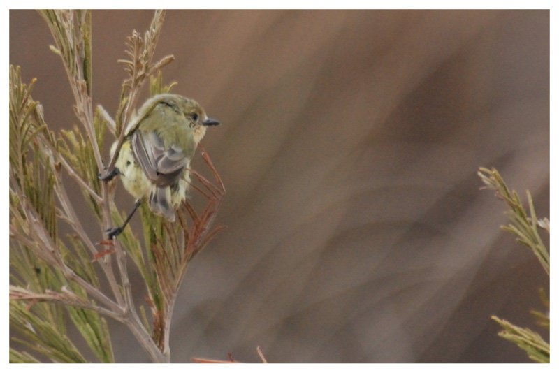

L'Acanthize nain
'Acanthize nain (Acanthiza nana) est une espèce de passereau que l'on rencontre en Australie. C'est une espèce protégée sous la convention National Parks and Wildlife Act, 1974.
C'est un petit oiseau à l'allure élégante. Il est discret, mais sait s'imposer. Il aime la proximité des autres oiseaux, il est rarement mis à l'écart de son groupe.
hautLe Gypaète Barbu

Le Gypaète barbu (Gypaetus barbatus) est une des quatre grandes espèces de vautours européens. C'est la seule espèce du genre Gypaetus. Il appartient à l'ordre des Accipitriformes et à la famille des Accipitridés.
hautLe Dacnis à coiffe bleue

Le Dacnis à coiffe bleue (Dacnis lineata) est une espèce de passereau de la famille des Thraupidae. On le trouve dans les forêts humides du bassin de l'Amazone.
haut